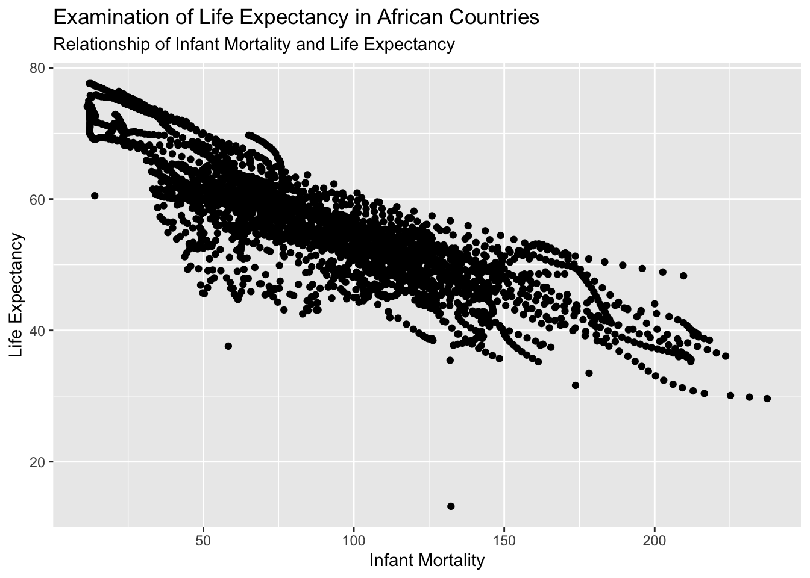
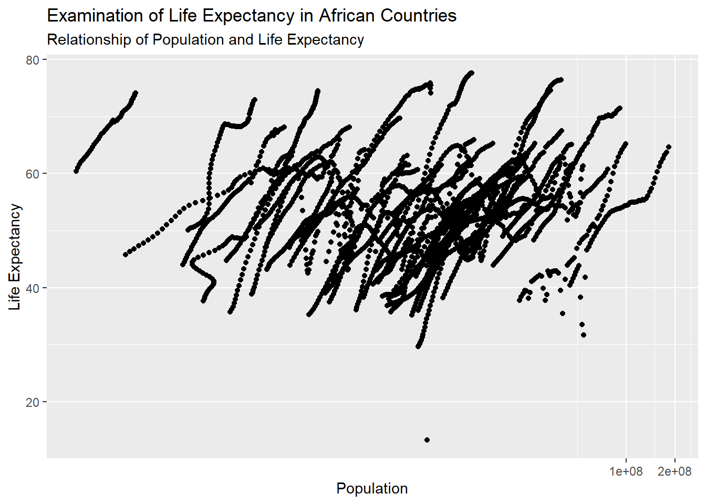
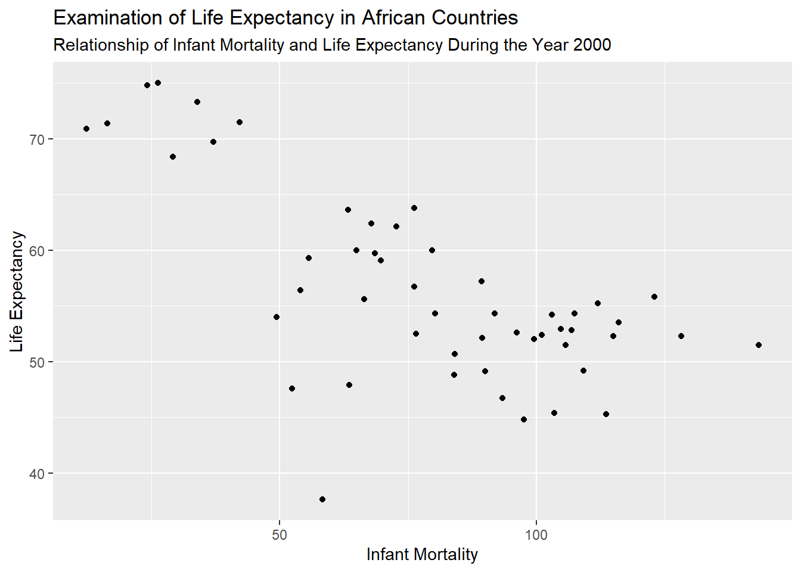
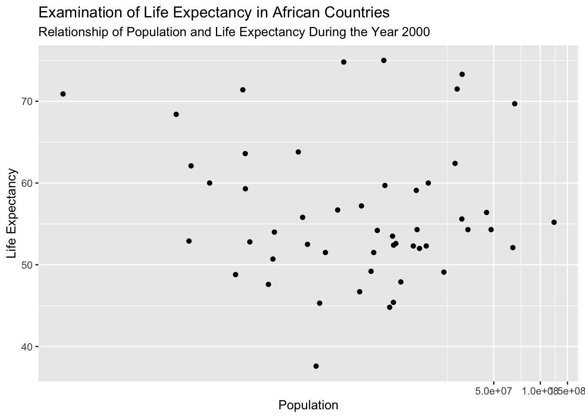
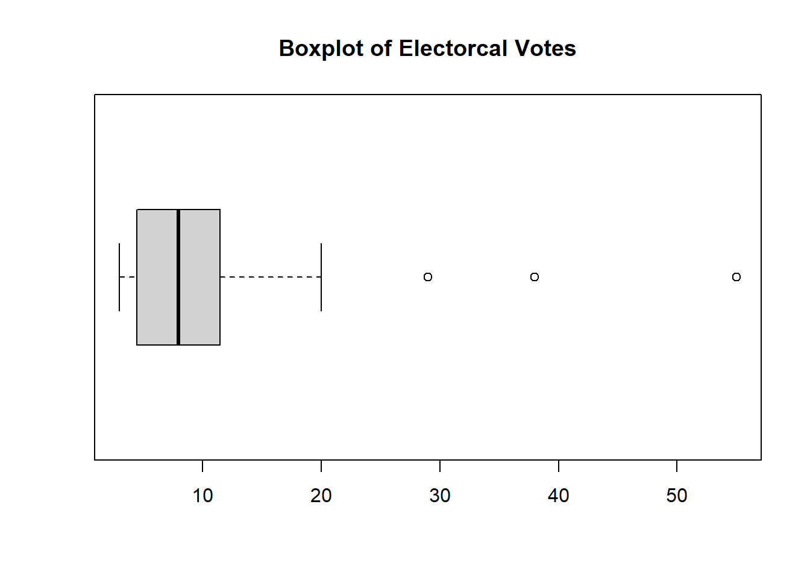
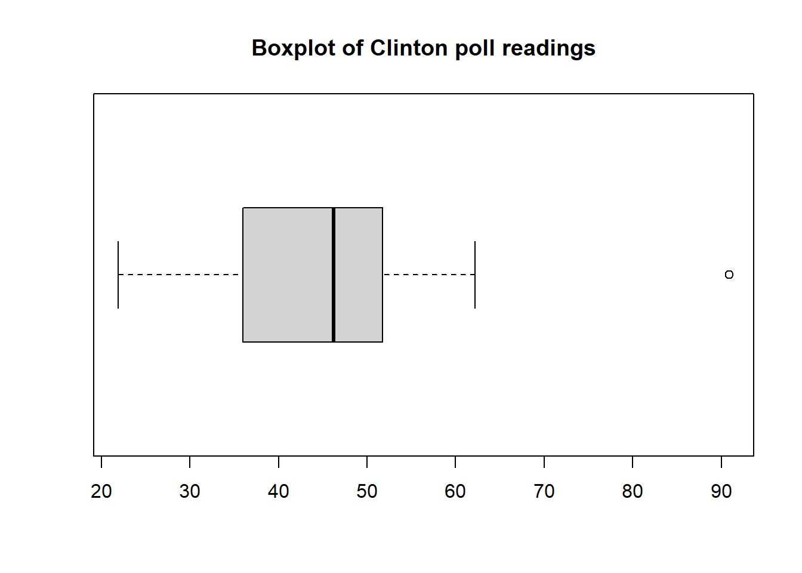
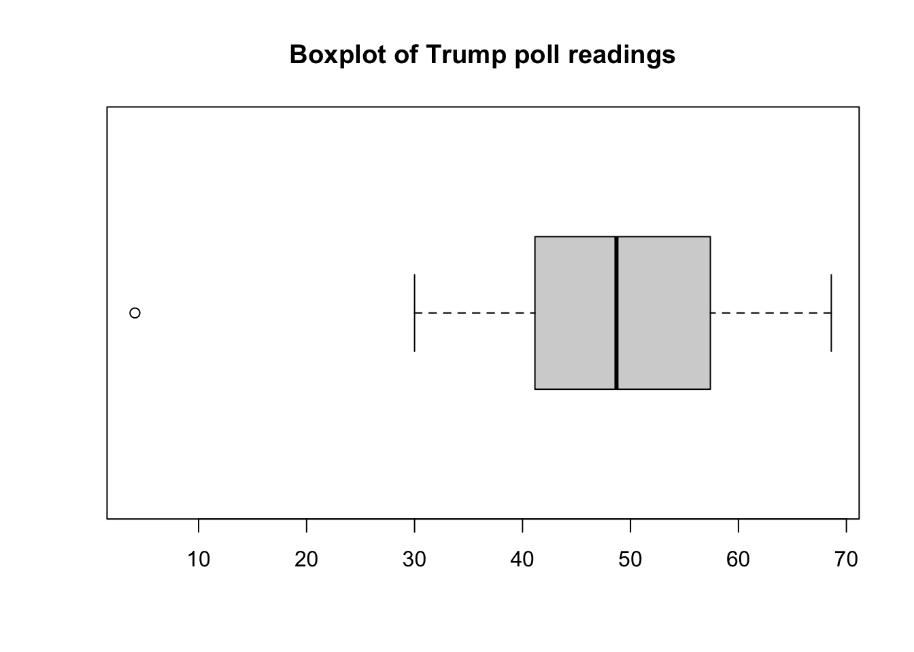
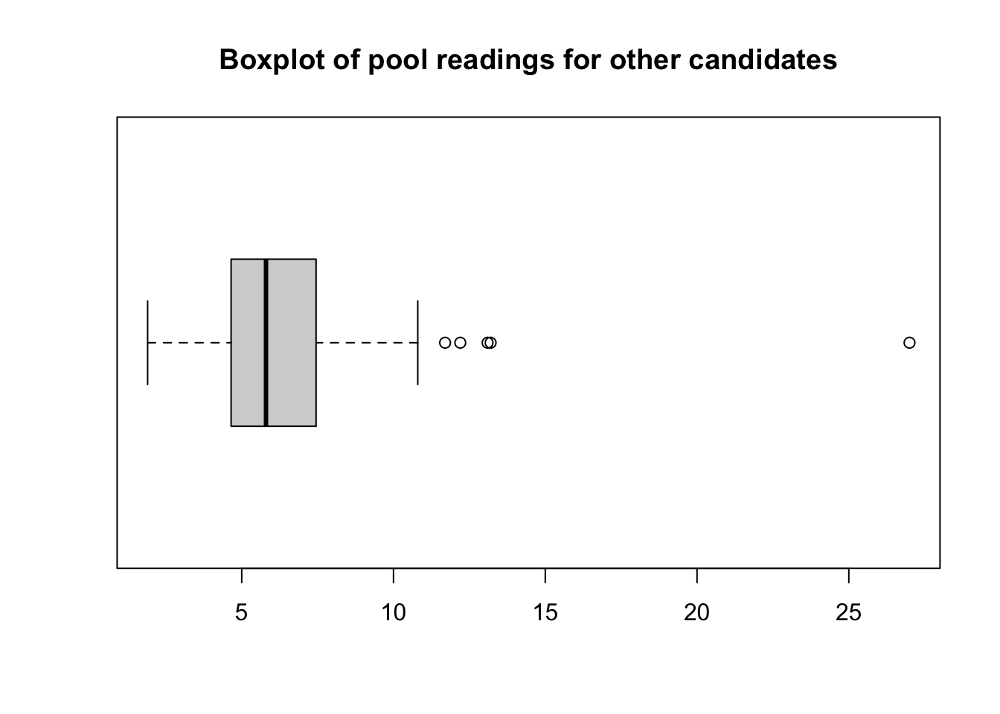

pacman::p_load(dslabs, tidyverse, readxl)
# I have the library versions commented out here for anyone needing to
# replicate this code that doesnt have the pacman package installed.
#library(dslabs)
#library(tidyverse)
#library(readxl)R Coding Exercise
This project is intended to serve as R coding practice, both for familiarity with R language and for some practice documenting code. We will be using the gapminder health and income dataset.
Loading necessary packages for the project, I like to use pacman::p_load() because it checks for installation of packages before loading the library and automatically installs ones that I don’t have, as well it allows me to load multiple in just one line. The only major downside is that it does require the installation of the pacman package to use.
dslabsin order to get the gapminder dataset.
tidyversefor its convenience in data cleaning and visualization.
Now we can take a look at the gapminder dataset. We start by using the str() function to get the Structure of the data. Then use the summary() function to get a quick summary of each of the variables in the dataset. Finally we use the class() function to confirm what type of object the gapminder dataset is.
#help(gapminder) #commented out for the sake of rendering later
print('-----Data Structure-----') #these are just to make the outputs a little more readable.[1] "-----Data Structure-----"str(gapminder)'data.frame': 10545 obs. of 9 variables:
$ country : Factor w/ 185 levels "Albania","Algeria",..: 1 2 3 4 5 6 7 8 9 10 ...
$ year : int 1960 1960 1960 1960 1960 1960 1960 1960 1960 1960 ...
$ infant_mortality: num 115.4 148.2 208 NA 59.9 ...
$ life_expectancy : num 62.9 47.5 36 63 65.4 ...
$ fertility : num 6.19 7.65 7.32 4.43 3.11 4.55 4.82 3.45 2.7 5.57 ...
$ population : num 1636054 11124892 5270844 54681 20619075 ...
$ gdp : num NA 1.38e+10 NA NA 1.08e+11 ...
$ continent : Factor w/ 5 levels "Africa","Americas",..: 4 1 1 2 2 3 2 5 4 3 ...
$ region : Factor w/ 22 levels "Australia and New Zealand",..: 19 11 10 2 15 21 2 1 22 21 ...print('-----Data Summary-----')[1] "-----Data Summary-----"summary(gapminder) country year infant_mortality life_expectancy
Albania : 57 Min. :1960 Min. : 1.50 Min. :13.20
Algeria : 57 1st Qu.:1974 1st Qu.: 16.00 1st Qu.:57.50
Angola : 57 Median :1988 Median : 41.50 Median :67.54
Antigua and Barbuda: 57 Mean :1988 Mean : 55.31 Mean :64.81
Argentina : 57 3rd Qu.:2002 3rd Qu.: 85.10 3rd Qu.:73.00
Armenia : 57 Max. :2016 Max. :276.90 Max. :83.90
(Other) :10203 NA's :1453
fertility population gdp continent
Min. :0.840 Min. :3.124e+04 Min. :4.040e+07 Africa :2907
1st Qu.:2.200 1st Qu.:1.333e+06 1st Qu.:1.846e+09 Americas:2052
Median :3.750 Median :5.009e+06 Median :7.794e+09 Asia :2679
Mean :4.084 Mean :2.701e+07 Mean :1.480e+11 Europe :2223
3rd Qu.:6.000 3rd Qu.:1.523e+07 3rd Qu.:5.540e+10 Oceania : 684
Max. :9.220 Max. :1.376e+09 Max. :1.174e+13
NA's :187 NA's :185 NA's :2972
region
Western Asia :1026
Eastern Africa : 912
Western Africa : 912
Caribbean : 741
South America : 684
Southern Europe: 684
(Other) :5586 print('-----Object Type-----')[1] "-----Object Type-----"class(gapminder)[1] "data.frame"Now we can filter to the continent variable to just Africa. To do this I use the dplyr function filter() along with the pipe %>%. I primarily do this for readability, although subsetting with base R syntax would be just as easy to do. After that I use str() and summary() again to get the data structure and summaries.
africadata <- gapminder %>% filter(continent == 'Africa')
print('-----Data Structure-----')[1] "-----Data Structure-----"str(africadata)'data.frame': 2907 obs. of 9 variables:
$ country : Factor w/ 185 levels "Albania","Algeria",..: 2 3 18 22 26 27 29 31 32 33 ...
$ year : int 1960 1960 1960 1960 1960 1960 1960 1960 1960 1960 ...
$ infant_mortality: num 148 208 187 116 161 ...
$ life_expectancy : num 47.5 36 38.3 50.3 35.2 ...
$ fertility : num 7.65 7.32 6.28 6.62 6.29 6.95 5.65 6.89 5.84 6.25 ...
$ population : num 11124892 5270844 2431620 524029 4829291 ...
$ gdp : num 1.38e+10 NA 6.22e+08 1.24e+08 5.97e+08 ...
$ continent : Factor w/ 5 levels "Africa","Americas",..: 1 1 1 1 1 1 1 1 1 1 ...
$ region : Factor w/ 22 levels "Australia and New Zealand",..: 11 10 20 17 20 5 10 20 10 10 ...print('-----Data Summary-----')[1] "-----Data Summary-----"summary(africadata) country year infant_mortality life_expectancy
Algeria : 57 Min. :1960 Min. : 11.40 Min. :13.20
Angola : 57 1st Qu.:1974 1st Qu.: 62.20 1st Qu.:48.23
Benin : 57 Median :1988 Median : 93.40 Median :53.98
Botswana : 57 Mean :1988 Mean : 95.12 Mean :54.38
Burkina Faso: 57 3rd Qu.:2002 3rd Qu.:124.70 3rd Qu.:60.10
Burundi : 57 Max. :2016 Max. :237.40 Max. :77.60
(Other) :2565 NA's :226
fertility population gdp continent
Min. :1.500 Min. : 41538 Min. :4.659e+07 Africa :2907
1st Qu.:5.160 1st Qu.: 1605232 1st Qu.:8.373e+08 Americas: 0
Median :6.160 Median : 5570982 Median :2.448e+09 Asia : 0
Mean :5.851 Mean : 12235961 Mean :9.346e+09 Europe : 0
3rd Qu.:6.860 3rd Qu.: 13888152 3rd Qu.:6.552e+09 Oceania : 0
Max. :8.450 Max. :182201962 Max. :1.935e+11
NA's :51 NA's :51 NA's :637
region
Eastern Africa :912
Western Africa :912
Middle Africa :456
Northern Africa :342
Southern Africa :285
Australia and New Zealand: 0
(Other) : 0 Now we will create two new objects, im.le and pop.le to isolate variables of interest.
im.lewill consist of the variablesinfant_mortalityandlife_expectancy
pop.lewill consist of the variablespopulationandlife_expectancy
We will accomplish this by using again the pipe operator %>% and the select() function.
im.le <- africadata %>% select(infant_mortality, life_expectancy)
# select() allows us to choose relevant columns for our new objects
pop.le <- africadata %>% select(population, life_expectancy)
print('-----Data Structure-----')[1] "-----Data Structure-----"print('---Population x Life Expectancy---')[1] "---Population x Life Expectancy---"str(im.le)'data.frame': 2907 obs. of 2 variables:
$ infant_mortality: num 148 208 187 116 161 ...
$ life_expectancy : num 47.5 36 38.3 50.3 35.2 ...print('---Infant Mortality x Life Expectancy---')[1] "---Infant Mortality x Life Expectancy---"str(pop.le)'data.frame': 2907 obs. of 2 variables:
$ population : num 11124892 5270844 2431620 524029 4829291 ...
$ life_expectancy: num 47.5 36 38.3 50.3 35.2 ...print('-----Data Summary-----')[1] "-----Data Summary-----"print('---Population x Life Expectancy---')[1] "---Population x Life Expectancy---"summary(im.le) infant_mortality life_expectancy
Min. : 11.40 Min. :13.20
1st Qu.: 62.20 1st Qu.:48.23
Median : 93.40 Median :53.98
Mean : 95.12 Mean :54.38
3rd Qu.:124.70 3rd Qu.:60.10
Max. :237.40 Max. :77.60
NA's :226 print('---Infant Mortality x Life Expectancy---')[1] "---Infant Mortality x Life Expectancy---"summary(pop.le) population life_expectancy
Min. : 41538 Min. :13.20
1st Qu.: 1605232 1st Qu.:48.23
Median : 5570982 Median :53.98
Mean : 12235961 Mean :54.38
3rd Qu.: 13888152 3rd Qu.:60.10
Max. :182201962 Max. :77.60
NA's :51 im.le %>%
ggplot(aes(x=infant_mortality, y=life_expectancy)) +
geom_point() +
labs(x='Infant Mortality', y='Life Expectancy',
title='Examination of Life Expectancy in African Countries',
subtitle='Relationship of Infant Mortality and Life Expectancy')Warning: Removed 226 rows containing missing values or values outside the scale range
(`geom_point()`).
pop.le %>%
ggplot(aes(x=population, y=life_expectancy)) +
coord_trans(x='log2') +
geom_point() +
labs(x='Population', y='Life Expectancy',
title='Examination of Life Expectancy in African Countries',
subtitle='Relationship of Population and Life Expectancy')Warning: Removed 51 rows containing missing values or values outside the scale range
(`geom_point()`).
The charts imply a negative correlation between infant mortality and life expectancy, as well as a positive correlation between population and life expectancy. However the “streaks” of points that we are seeing are likely due to the year variable from our original dataset. What we are seeing is the year over year change in each country’s life expectancy and infant mortality or population. We can isolate to one year in particular to avoid this. First we should determine which years have missing data for infant_mortality.
africadata %>%
group_by(year) %>% #group_by function will allow us to easily identify the year
summarize(
missing_im = sum(is.na(infant_mortality)) #takes advantage of sum function and logical values since TRUE==1
)# A tibble: 57 × 2
year missing_im
<int> <int>
1 1960 10
2 1961 17
3 1962 16
4 1963 16
5 1964 15
6 1965 14
7 1966 13
8 1967 11
9 1968 11
10 1969 7
# ℹ 47 more rowsAs we can see, there are missing values for infant mortality all the way up to 1981, and again in 2016. So we will just need to choose a year after 1981, but not 2016.
We will isolate to the year 2000 by using the dplyr filter() function again.
im.le2000 <- africadata %>%
filter(year == 2000) %>%
select(infant_mortality, life_expectancy)
pop.le2000 <- africadata %>%
filter(year == 2000) %>%
select(population, life_expectancy)
print('-----Data Structure-----')[1] "-----Data Structure-----"print('---Population x Life Expectancy---')[1] "---Population x Life Expectancy---"str(im.le2000)'data.frame': 51 obs. of 2 variables:
$ infant_mortality: num 33.9 128.3 89.3 52.4 96.2 ...
$ life_expectancy : num 73.3 52.3 57.2 47.6 52.6 46.7 54.3 68.4 45.3 51.5 ...print('---Infant Mortality x Life Expectancy---')[1] "---Infant Mortality x Life Expectancy---"str(pop.le2000)'data.frame': 51 obs. of 2 variables:
$ population : num 31183658 15058638 6949366 1736579 11607944 ...
$ life_expectancy: num 73.3 52.3 57.2 47.6 52.6 46.7 54.3 68.4 45.3 51.5 ...print('-----Data Summary-----')[1] "-----Data Summary-----"print('---Population x Life Expectancy---')[1] "---Population x Life Expectancy---"summary(im.le2000) infant_mortality life_expectancy
Min. : 12.30 Min. :37.60
1st Qu.: 60.80 1st Qu.:51.75
Median : 80.30 Median :54.30
Mean : 78.93 Mean :56.36
3rd Qu.:103.30 3rd Qu.:60.00
Max. :143.30 Max. :75.00 print('---Infant Mortality x Life Expectancy---')[1] "---Infant Mortality x Life Expectancy---"summary(pop.le2000) population life_expectancy
Min. : 81154 Min. :37.60
1st Qu.: 2304687 1st Qu.:51.75
Median : 8799165 Median :54.30
Mean : 15659800 Mean :56.36
3rd Qu.: 17391242 3rd Qu.:60.00
Max. :122876723 Max. :75.00 Repeating the process for our plots with the new data:
im.le2000 %>%
ggplot(aes(x=infant_mortality, y=life_expectancy)) +
geom_point() +
labs(x='Infant Mortality', y='Life Expectancy',
title='Examination of Life Expectancy in African Countries',
subtitle='Relationship of Infant Mortality and Life Expectancy During the Year 2000')
pop.le2000 %>%
ggplot(aes(x=population, y=life_expectancy)) +
coord_trans(x='log2') +
geom_point() +
labs(x='Population', y='Life Expectancy',
title='Examination of Life Expectancy in African Countries',
subtitle='Relationship of Population and Life Expectancy During the Year 2000')
We see there is still likely a relationship between infant mortality and life expectancy, but the relationship between population and life expectancy is less apparent, if it is still there at all. To get more conclusive results, we can fit a linear model between the variables using the lm() function.
fit1 <- lm(life_expectancy~., data = im.le2000)
#fits life expectancy as a function of infant mortality.
#Infant mortality is not explicitly listed since it is the only other variable in the object.
fit2 <- lm(life_expectancy~., data = pop.le2000)
#fits life expectancy as a function of population.
#Population is not explicitly listed since it is the only other variable in the object.
print('-----Life Expectancy as a function of Infant Mortality-----')[1] "-----Life Expectancy as a function of Infant Mortality-----"summary(fit1) #summary of each linear model fit to get results.
Call:
lm(formula = life_expectancy ~ ., data = im.le2000)
Residuals:
Min 1Q Median 3Q Max
-22.6651 -3.7087 0.9914 4.0408 8.6817
Coefficients:
Estimate Std. Error t value Pr(>|t|)
(Intercept) 71.29331 2.42611 29.386 < 2e-16 ***
infant_mortality -0.18916 0.02869 -6.594 2.83e-08 ***
---
Signif. codes: 0 '***' 0.001 '**' 0.01 '*' 0.05 '.' 0.1 ' ' 1
Residual standard error: 6.221 on 49 degrees of freedom
Multiple R-squared: 0.4701, Adjusted R-squared: 0.4593
F-statistic: 43.48 on 1 and 49 DF, p-value: 2.826e-08print('-----Life Expectancy as a function of Population-----')[1] "-----Life Expectancy as a function of Population-----"summary(fit2)
Call:
lm(formula = life_expectancy ~ ., data = pop.le2000)
Residuals:
Min 1Q Median 3Q Max
-18.429 -4.602 -2.568 3.800 18.802
Coefficients:
Estimate Std. Error t value Pr(>|t|)
(Intercept) 5.593e+01 1.468e+00 38.097 <2e-16 ***
population 2.756e-08 5.459e-08 0.505 0.616
---
Signif. codes: 0 '***' 0.001 '**' 0.01 '*' 0.05 '.' 0.1 ' ' 1
Residual standard error: 8.524 on 49 degrees of freedom
Multiple R-squared: 0.005176, Adjusted R-squared: -0.01513
F-statistic: 0.2549 on 1 and 49 DF, p-value: 0.6159For the fit of Life Expectancy as a function of Infant Mortality, we see a p-value of 2.826e-08. Against an alpha-level of 0.05, we would conclude that there is a significant linear relationship between Infant Mortality and Life Expectancy.
For the fit of Life Expectancy as a function of Population, we see a p-value of 0.6159. Against an alpha-level of 0.05, we would conclude that there is not a significant linear relationship between Population and Life Expectancy.
The following section is contributed by ZANE CHUMLEY.
Pick a dataset
# It's an election year, so let's look at the polls from the year Trump eventually won.
ZaneA03 <- results_us_election_2016Explore the dataset
# look at the data's type
class(ZaneA03)[1] "data.frame"# look at the data's structure
str(ZaneA03)'data.frame': 51 obs. of 5 variables:
$ state : chr "California" "Texas" "Florida" "New York" ...
$ electoral_votes: int 55 38 29 29 20 20 18 16 16 15 ...
$ clinton : num 61.7 43.2 47.8 59 55.8 47.9 43.5 45.9 47.3 46.2 ...
$ trump : num 31.6 52.2 49 36.5 38.8 48.6 51.7 51 47.5 49.8 ...
$ others : num 6.7 4.5 3.2 4.5 5.4 3.6 4.8 3.1 5.2 4 ...# look at a summary of the data
summary(ZaneA03) state electoral_votes clinton trump
Length:51 Min. : 3.00 Min. :21.90 Min. : 4.10
Class :character 1st Qu.: 4.50 1st Qu.:36.00 1st Qu.:41.15
Mode :character Median : 8.00 Median :46.20 Median :48.70
Mean :10.55 Mean :44.79 Mean :48.45
3rd Qu.:11.50 3rd Qu.:51.75 3rd Qu.:57.40
Max. :55.00 Max. :90.90 Max. :68.60
others
Min. : 1.900
1st Qu.: 4.650
Median : 5.800
Mean : 6.767
3rd Qu.: 7.450
Max. :27.000 It is worth noting that the dataset is significantly less detailed than described in https://cran.r-project.org/web/packages/dslabs/dslabs.pdf. While there are only 5 columns in the dataset, the description indicated many more columns would be provided:
- state. State in which poll was taken. ’U.S‘ is for national polls.
- startdate. Poll’s start date.
- enddate. Poll’s end date.
- pollster. Pollster conducting the poll.
- grade. Grade assigned by fivethirtyeight to pollster.
- samplesize. Sample size.
- population. Type of population being polled.
- rawpoll_clinton. Percentage for Hillary Clinton.
- rawpoll_trump. Percentage for Donald Trump
- rawpoll_johnson. Percentage for Gary Johnson
- rawpoll_mcmullin. Percentage for Evan McMullin.
- adjpoll_clinton. Fivethirtyeight adjusted percentage for Hillary Clinton.
- ajdpoll_trump. Fivethirtyeight adjusted percentage for Donald Trump
- adjpoll_johnson. Fivethirtyeight adjusted percentage for Gary Johnson
- adjpoll_mcmullin. Fivethirtyeight adjusted percentage for Evan McMullin
Do any processing/cleaning you want to do
From the exploration above it does not appear there are any NA values in the data. Let’s check to be sure.
# Any NA values in the state column?
ZaneA03.state.NAs <- ZaneA03[ZaneA03$state=="NA",]
str(ZaneA03.state.NAs)'data.frame': 0 obs. of 5 variables:
$ state : chr
$ electoral_votes: int
$ clinton : num
$ trump : num
$ others : num # Any NA values in the electoral_votes column?
ZaneA03.electorals.NAs <- ZaneA03[ZaneA03$electoral_votes=="NA",]
str(ZaneA03.electorals.NAs)'data.frame': 0 obs. of 5 variables:
$ state : chr
$ electoral_votes: int
$ clinton : num
$ trump : num
$ others : num # Any NA values in the clinton column?
ZaneA03.clinton.NAs <- ZaneA03[ZaneA03$clinton=="NA",]
str(ZaneA03.clinton.NAs)'data.frame': 0 obs. of 5 variables:
$ state : chr
$ electoral_votes: int
$ clinton : num
$ trump : num
$ others : num # Any NA values in the trump column?
ZaneA03.trump.NAs <- ZaneA03[ZaneA03$trump=="NA",]
str(ZaneA03.trump.NAs)'data.frame': 0 obs. of 5 variables:
$ state : chr
$ electoral_votes: int
$ clinton : num
$ trump : num
$ others : num # Any NA values in the others column?
ZaneA03.others.NAs <- ZaneA03[ZaneA03$others=="NA",]
str(ZaneA03.others.NAs)'data.frame': 0 obs. of 5 variables:
$ state : chr
$ electoral_votes: int
$ clinton : num
$ trump : num
$ others : num There are no objects in any of the five (5) datasets housing NA values. Therefore, no cleaning is warranted.
But are there any outliers?
Make a few exploratory figures.
# Let's use boxplots to see if there are any outliers in the four (4) columns containing numerical data
boxplot(ZaneA03$electoral_votes
, main="Boxplot of Electorcal Votes"
, xlab=""
, horizontal=TRUE
)
boxplot(ZaneA03$clinton
, main="Boxplot of Clinton poll readings"
, xlab=""
, horizontal=TRUE
)
boxplot(ZaneA03$trump
, main="Boxplot of Trump poll readings"
, xlab=""
, horizontal=TRUE
)
boxplot(ZaneA03$others
, main="Boxplot of pool readings for other candidates"
, xlab=""
, horizontal=TRUE
)
Optionally, also some tables.
# Let's display all the rows containing an outlier revealed by the boxplots above.
# We'll sorting the rows by the values in each column into new datasets.
# The sorting will be largest values first.
# Then we will display the top and/or the bottom of the dataset corresponding to the upper and lower outliers, respectively.
ZaneA03.electorals.sorted <- ZaneA03[order(-ZaneA03$electoral_votes),]
head(ZaneA03.electorals.sorted
, n=3
) state electoral_votes clinton trump others
1 California 55 61.7 31.6 6.7
2 Texas 38 43.2 52.2 4.5
3 Florida 29 47.8 49.0 3.2ZaneA03.clinton.sorted <- ZaneA03[order(-ZaneA03$clinton),]
head(ZaneA03.clinton.sorted
, n=1
) state electoral_votes clinton trump others
51 District of Columbia 3 90.9 4.1 5ZaneA03.trump.sorted <- ZaneA03[order(-ZaneA03$trump),]
tail(ZaneA03.trump.sorted
, n=1
) state electoral_votes clinton trump others
51 District of Columbia 3 90.9 4.1 5ZaneA03.others.sorted <- ZaneA03[order(-ZaneA03$others),]
head(ZaneA03.others.sorted
, n=5
) state electoral_votes clinton trump others
35 Utah 6 27.5 45.5 27.0
40 Idaho 4 27.5 59.3 13.2
49 Vermont 3 56.7 30.3 13.1
44 Alaska 3 36.6 51.3 12.2
37 New Mexico 5 48.3 40.0 11.7Run some simple statistical model(s). Your choice.
How successful were the polls in predicting which candidate ultimately carried the state in the election? Well, we’ll need another dataset … the results from the voting.
# Load actual votes from 2016
ZaneA03.votedata <- read_xlsx("1976-2020-president.xlsx"
, sheet="2016Flat"
, col_names = TRUE
)
# look at the data's type
class(ZaneA03.votedata)[1] "tbl_df" "tbl" "data.frame"# look at the data's structure
str(ZaneA03.votedata)tibble [51 × 9] (S3: tbl_df/tbl/data.frame)
$ State : chr [1:51] "ALABAMA" "ALASKA" "ARIZONA" "ARKANSAS" ...
$ VotesClinton: num [1:51] 729547 116454 1161167 380494 8753788 ...
$ VotesTrump : num [1:51] 1318255 163387 1252401 684872 4483810 ...
$ VotesOther : num [1:51] 75570 38767 159597 65269 943997 ...
$ TotalVotes : num [1:51] 2123372 318608 2573165 1130635 14181595 ...
$ ActClinton : num [1:51] 34.4 36.6 45.1 33.7 61.7 ...
$ ActTrump : num [1:51] 62.1 51.3 48.7 60.6 31.6 ...
$ ActOthers : num [1:51] 3.56 12.17 6.2 5.77 6.66 ...
$ TrumpWin : logi [1:51] TRUE TRUE TRUE TRUE FALSE FALSE ...# look at a summary of the data
summary(ZaneA03.votedata) State VotesClinton VotesTrump VotesOther
Length:51 Min. : 55973 Min. : 12723 Min. : 17022
Class :character 1st Qu.: 297584 1st Qu.: 377422 1st Qu.: 56876
Mode :character Median : 780154 Median : 949136 Median : 93418
Mean :1291247 Mean :1235001 Mean :155854
3rd Qu.:1810340 3rd Qu.:1575898 3rd Qu.:225032
Max. :8753788 Max. :4685047 Max. :943997
TotalVotes ActClinton ActTrump ActOthers
Min. : 258788 Min. :21.63 Min. : 4.07 Min. : 1.944
1st Qu.: 758094 1st Qu.:35.99 1st Qu.:41.14 1st Qu.: 4.739
Median : 2001336 Median :46.17 Median :48.67 Median : 5.821
Mean : 2682102 Mean :44.61 Mean :48.32 Mean : 7.071
3rd Qu.: 3347920 3rd Qu.:51.31 3rd Qu.:57.44 3rd Qu.: 8.611
Max. :14181595 Max. :90.48 Max. :68.63 Max. :26.998
TrumpWin
Mode :logical
FALSE:21
TRUE :30
# Are we fortunate enough that the dataset of polls and the dataset of votes are in the same order by state? One way to check is through visual inspection.
ZaneA03.state.sorted <- ZaneA03[order(ZaneA03$state),]
ZaneA03.sortcheck <- rbind(ZaneA03.state.sorted$state
, ZaneA03.votedata$State
)
head(ZaneA03.sortcheck
, n=51
) [,1] [,2] [,3] [,4] [,5] [,6]
[1,] "Alabama" "Alaska" "Arizona" "Arkansas" "California" "Colorado"
[2,] "ALABAMA" "ALASKA" "ARIZONA" "ARKANSAS" "CALIFORNIA" "COLORADO"
[,7] [,8] [,9] [,10] [,11]
[1,] "Connecticut" "Delaware" "District of Columbia" "Florida" "Georgia"
[2,] "CONNECTICUT" "DELAWARE" "DISTRICT OF COLUMBIA" "FLORIDA" "GEORGIA"
[,12] [,13] [,14] [,15] [,16] [,17] [,18]
[1,] "Hawaii" "Idaho" "Illinois" "Indiana" "Iowa" "Kansas" "Kentucky"
[2,] "HAWAII" "IDAHO" "ILLINOIS" "INDIANA" "IOWA" "KANSAS" "KENTUCKY"
[,19] [,20] [,21] [,22] [,23] [,24]
[1,] "Louisiana" "Maine" "Maryland" "Massachusetts" "Michigan" "Minnesota"
[2,] "LOUISIANA" "MAINE" "MARYLAND" "MASSACHUSETTS" "MICHIGAN" "MINNESOTA"
[,25] [,26] [,27] [,28] [,29] [,30]
[1,] "Mississippi" "Missouri" "Montana" "Nebraska" "Nevada" "New Hampshire"
[2,] "MISSISSIPPI" "MISSOURI" "MONTANA" "NEBRASKA" "NEVADA" "NEW HAMPSHIRE"
[,31] [,32] [,33] [,34] [,35]
[1,] "New Jersey" "New Mexico" "New York" "North Carolina" "North Dakota"
[2,] "NEW JERSEY" "NEW MEXICO" "NEW YORK" "NORTH CAROLINA" "NORTH DAKOTA"
[,36] [,37] [,38] [,39] [,40] [,41]
[1,] "Ohio" "Oklahoma" "Oregon" "Pennsylvania" "Rhode Island" "South Carolina"
[2,] "OHIO" "OKLAHOMA" "OREGON" "PENNSYLVANIA" "RHODE ISLAND" "SOUTH CAROLINA"
[,42] [,43] [,44] [,45] [,46] [,47]
[1,] "South Dakota" "Tennessee" "Texas" "Utah" "Vermont" "Virginia"
[2,] "SOUTH DAKOTA" "TENNESSEE" "TEXAS" "UTAH" "VERMONT" "VIRGINIA"
[,48] [,49] [,50] [,51]
[1,] "Washington" "West Virginia" "Wisconsin" "Wyoming"
[2,] "WASHINGTON" "WEST VIRGINIA" "WISCONSIN" "WYOMING"The visual inspection reveals the data is aligned by state.
# The visual inspection reveals the data is aligned by state.
# So, polls and votes, by the power invested in me by R,
# I pronounce your merged!
# Build the list of datasets to merge
# ZaneA03.datasetlist <- c("ZaneA03.state.sorted"
# , "ZaneA03.votedata"
# )
# class(ZaneA03.datasetlist)# Go forth and merge!
# Rest of this section commented out so you can see everything above in the render
# ZaneA03.PollsAndVotes <- rbind(ZaneA03.state.sorted
# , ZaneA03.votedata)#
#ZaneA03.PollsAndVotes <- ZaneA03.state.sorted + ZaneA03.votedata